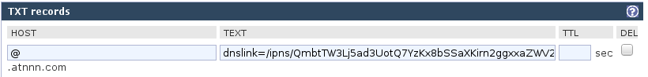

Serving a website over IPFS
This page is available over HTTP at http://atnnn.com but also over IPFS at http://ipfs.io/ipns/atnnn.com/p/ipfs-hosting (edit: not any more). Here’s how I do did it:
ipfs name publish `ipfs add -rq ~/atnnn.com/_site | tail -n 1`The rest of this article goes into more details and explains why you might want to do it too.
I discovered IPFS when I saw this amazing demo on Hacker News last year. I’ve been using it regularly ever since, and I even fixed a few annoyances that I found.
A quick overview of IPFS
IPFS is a great way to share files. IPFS stands for Inter-Planetary File System. The name is as ambitious as the project’s goal to replace HTTP.
An IPFS gateway, such as http://ipfs.io, lets you use IPFS without installing it.
An IPFS daemon is an application that runs in the background, allowing you to use IPFS locally.
The IPFS swarm is a decentralised network of IPFS daemons. Daemons find each other using a DHT or mDNS.
An IPFS hash uniquely identifies each file and directory.
IPNS, the IPFS Name System, allows finding files by name instead of using long cryptic hashes.
An IPFS mount allows publishing and accessing files to and from IPFS as if they were local files.
The IPFS repo stores a temporary local copy of files fetched from IPFS. This copy becomes permanent if the file is pinned.
IPFS bitswap is a bittorrrent-like algorithm for efficiently transfering files over IPFS. All files in the repo are automatically shared with the rest of the swarm.
go-ipfs is the main implementation of IPFS.
The the IPFS spec has more details on how all these concepts work together.
Installing IPFS
You can follow the official instructions to install IPFS on your computer. If you are running a 64-bit Linux, you can follow along with me. I start by downloading and extracting IPFS:
$ wget https://dist.ipfs.io/go-ipfs/v0.4.3-rc1/go-ipfs_v0.4.3-rc1_linux-amd64.tar.gz
$ tar xf go-ipfs_v0.4.3-rc1_linux-amd64.tar.gzThen I install the ipfs binary to my PATH and initialize the IPFS repo:
$ mv go-ipfs/ipfs /usr/local/bin/ipfs
$ ipfs init
initializing ipfs node at /home/atnnn/.ipfs
generating 2048-bit RSA keypair...done
peer identity: QmSg4AzfWd6YHrDyZp2w7FqTeP6fAQcb6X5wQ8KoVYYvaPI start the IPFS daemon to connect to the swarm:
$ ipfs daemon
Initializing daemon...
Swarm listening on /ip4/127.0.0.1/tcp/4001
Swarm listening on /ip4/172.17.0.1/tcp/4001
Swarm listening on /ip4/69.132.122.247/tcp/4001
Swarm listening on /ip6/::1/tcp/4001
API server listening on /ip4/127.0.0.1/tcp/5001
Gateway (readonly) server listening on /ip4/127.0.0.1/tcp/8080
Daemon is readyI let the daemon run in the background.
Adding my website to IPFS
I store my website in my local atnnn.com/_site folder. The whole process of uploading it is automated in a Makefile. Let me take you through it step by step.
But first, here’s how you might download a local copy of your website. Replace www.atnnn.com with your own website:
$ SITE=www.atnnn.com
$ wget --mirror --convert-links --page-requisites http://$SITE
Total wall clock time: 2.7s
Downloaded: 40 files, 2.4M in 0.5s (4.69 MB/s)
Converted links in 20 files in 0.003 seconds.It’s important to use relative links and to include all assets such as images, styles and fonts. wget will try to do that if you tell it to --convert-links and to download --page-requisites but it isn’t perfect.
After building a local copy of my website, I can add it to IPFS:
$ ipfs add -r $SITE
added QmcgHMhAzAqZpQUnarDhqA8XhAbYuHuixkUH2r5T8S9YtP atnnn.com/_siteMy website is now available via IPFS at:
/ipfs/QmcgHMhAzAqZpQUnarDhqA8XhAbYuHuixkUH2r5T8S9YtP/
Linking to my website on IPFS
So far, all I’ve got is a long and cryptic hash to identify my website. Using it has many advantages:
It’s a secure hash. Anyone can host a copy of my website but all visitors can have the guarantee that it hasn’t been modified.
If you link to my website, you can pin that hash and make sure your link never dies. If I stop hosting my website, the link will not die as long as someone else still has it pinned.
If I turn my website into a My Little Pony fansite, the link will still point to my original site.
Visitors can automatically download the website from each other, reducing their load time and the load on my IPFS daemon.
To make sure my website stays online, I am going to pin it on another machine. I have a Linode VPS that I use for that purpose, called ipfs.atnnn:
$ ssh ipfs.atnnn
ipfs.atnnn$ ipfs pin add QmcgHMhAzAqZpQUnarDhqA8XhAbYuHuixkUH2r5T8S9YtP
pinned QmcgHMhAzAqZpQUnarDhqA8XhAbYuHuixkUH2r5T8S9YtP recursivelyI can also use the id of my IPFS daemon as an updatable pointer to my website:
ipfs.atnnn$ ipfs name publish QmcgHMhAzAqZpQUnarDhqA8XhAbYuHuixkUH2r5T8S9YtP
Published to QmbtTW3Lj5ad3UotQ7YzKx8bSSaXKirn2ggxxaZWV28z3DThe hash starting with QmbtTW3L is the unique id of my IPFS daemon. My website can now be accessed using IPNS at that id:
/ipns/QmbtTW3Lj5ad3UotQ7YzKx8bSSaXKirn2ggxxaZWV28z3D
The id is also the hash of a public key and IPNS forbids anyone else from publishing to it. It provides me with a safe link that I can share and that will always point to the newest version of my website.
But it is still long and cryptic. To fix that, IPNS lets me use a domain name as an alias for any IPFS or IPNS path. To do so, I added a TXT record to my domain with the special dnslink= setting. My DNS provider, ZoneEdit, lets me do this easily:

I can verify that the record is in place:
$ host -t TXT atnnn.com
atnnn.com descriptive text "dnslink=/ipns/QmbtTW3Lj5ad3UotQ7YzKx8bSSaXKirn2ggxxaZWV28z3D"IPNS happily follows this record and I can share a new link to my website:
The IPFS gateway
The public http://ipfs.io HTTP gateway is the easiest way to share IPFS and IPNS links with people who do not have IPFS installed.
If you have IPFS installed, you can access these links directly through IPFS by using a browser plugin, such as this one for Firefox or this one for Chrome.
Another alternative is to host an IPFS gateway yourself. You can restrict which IPFS websites can be accessed using a reverse proxy such as Nginx. For example, I might use this Nginx configuration:
location / {
rewrite /(.*) /ipns/atnnn.com/$1 break;
proxy_pass http://127.0.0.1:8080;
}Enjoy IPFS
Now my website is available over IPFS, just like many others such as neocities.org and ipfs.pics. But hosting websites is not the only thing IPFS can do. I’ve also used IPFS for other projects, as a replacement for Rsync when sharing build artifacts between servers and as a replacement for Bittorrent for sharing large files with friends.
I don’t think IPFS will ever replace HTTP, but I’m certain it can keep improving the web for both users and developers.